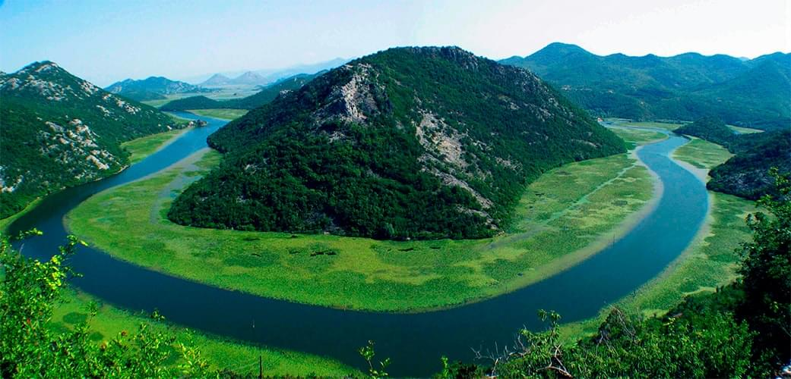

Одно из самых красивых мест
Скадарское озеро — это одна из самых красивых достопримечательностей Черногории. Озеро является самым крупным пресноводным водоемом на Балканском полуострове. Озеро названо в честь города Скадар (Шкодра), расположенного на юго-восточном берегу.
Вода в озеро поступает из 6 рек (самая крупная река Морача), источников и подземных ключей. При этом всего одна река вытекает из него — это река Бояна, которая и связывает озеро с Адриатическим морем.
Летом озеро прогревается до +27 градусов, а зимой охлаждается до +7. Здесь доминирует водная и болотистая экосистема. Две трети площади озера относятся к территории Черногории, все остальное – к Албании.
Берега озера имеют множество небольших бухт, полуостровов и островов. Здесь каменные мысы чередуются с бухтами, покрытыми густым тростником, а поверхность покрыта кувшинками или разными довольно редкими растениями, например, плавающий водяной орех. На берегах можно увидеть различные мелкие цветы, дикие деревья Озеро является местом обитания около 281 вида птиц. Здесь живут черный ибис, далматинский пеликан, которые являются эндемиками, то есть видами, характерными именно для этого ареала. Стаи уток и гусей здесь проводят зиму. Проживает 48 видов рыб: карпы, угри и полосатая кефаль, которые приплывают сюда вверх по течению вдоль реки Бояна. 50 видов млекопитающих, пресмыкающиеся, земноводные, насекомые. Растут различные травы.
Тайны скадарского озера
Скадарское озеро имеет историческое наследие. Небольшие города: Риека Црноевич или Вирпазар, рыбацкие деревни (Враньина, Каруч или Додоши) сохранили свою внешность, там стоят небольшие каменные дома и напоминают нам о прошлом.
Скадарское озеро окутано тайнами истории, о чем говорят множество монастырей и церквей, различных археологических находок, крепостей, а также мосты и колодцы Здесь сохранились такие оборонительные сооружения как крепости Лесендро, Бесац, Грможур.
Крепость Лесендро появилась в XVIII веке, именно она напоминает о противоборстве Черногории и Турции. Являлась защитой от набегов турков во времена правления Петра II Негоша. Правитель любил это место и даже написал здесь парочку литературных произведений. Сейчас крепость находится в заброшенном состоянии, но отсюда открывается восхитительный вид на озеро.
Крепость Бесац — это одно из старейших военных укреплений, сохранившихся на территории современной Черногории. Появилась во времена Османской империи в XV веке, но некоторые башни за крепостной стеной появились во время средневекового государства Зета. Крепость разграничивала славянскую и турецкую территорию.
Крепость Грможур - «змеиный остров». В 1843 году турки захватили три ближайших форта и возвели крепость, разместив в ней военный гарнизон. Толстые стены, укрепленные сторожевыми башнями было тяжело выбить у врага. Но в 1878 году черногорцам удалось взять крепость Грможур. Позже король Никола I создал здесь тюрьму. Темница была рассчитана всего на двух заключенных. Говорят, что сюда привозили очень опасных преступников, которые не умели плавать. Но если кто-то сбежит, то место сбежавшего заключенного занимал тюремщик, поэтому преступников хорошо охраняли. Все-таки нашлись смельчаки, которым удалось бежать, они выбили деревянную дверь камеры и сделали из нее плот. Сейчас после землетрясения 1905 года там остались лишь полуразрушенные стены.
Черногорская Венеция
На берегу озера находится город Вирпазар, откуда начинаются все экскурсии. Это деревушка сыграла большую роль в истории Черногории, именно здесь находился порт и железнодорожная станция. Сначала здесь было поселение Вир, которое основали на берегу речного водоворота, где местные жители открыли небольшой рынок. И отсюда Вирпазар и получил свое название: «вир» – речной водоворот, «пазар» – рынок. А теперь здесь город, который почти полностью окружен водой, поэтому его часто также называют «Черногорской Венецией».
Скадарское озеро — это уникальный природный заповедник. Здесь, безусловно, есть, что посмотреть.
Если вы хотите познать всю красоту Скадарского озера, то лучше заказать водную экскурсию. Здесь организуют поездки на лодках, байдарках, яхтах. Обещаем, вид откроется волшебный. Сможете просмотреть все изгибы озера и оценить его великолепие. Можно будет и высадиться на островках, погулять и пообщаться с монахами.